Material Library UI Design Delivery
A master-data interface for the cabinetmaking and woodworking industry. This handbook brings the entire design iteration together into one user and handover guide: from the three concept directions and the A+B fusion to every interaction in the clickable prototype (editing, approvals and supplier management).
01Delivery overview
Two kinds of deliverables were produced: three static concept-stage design drafts (PNG) and one continuously iterated high-fidelity clickable prototype (HTML). The prototype is the only active deliverable; the concept drafts record the design process.
3 design drafts
In ui-concepts/: A Flagship Workbench, B Material Gallery and C Command Bar as PNGs, plus the comparison document COMPARISON.md.
Clickable prototype
In prototype/: 5 source files + 15 verification screenshots. Dual modes, shared data, complete editing/approval flow and supplier management.
Master data only
Price is reference-only (it changes over time) and is not shown in the main UI. Live inventory is handled by a separate system and is out of scope here.
prototype/index.html — open it directly in a browser (no server and no dependency installation required). Data, styles, structure and logic are separated into files, so changing one place updates both modes.02Design decisions & evolution
After comparing the three concepts, the user selected the A + B combination — A as the admin workbench and B as the browse/selection end, unified under one colour system. The prototype was then iterated round by round.
A · Flagship Workbench
Four-column data workbench: icon rail + facets + table + detail. High information density, suited to bulk governance and approvals. → Admin end
B · Material Gallery
Swatch card grid for selecting by appearance; touch-friendly. → Selection end
C · Command Bar
Dark keyboard-driven command palette for power users. Kept as a comparison option; not merged into the prototype.
Iteration timeline
v1 · A+B fusion
One app with a top-bar mode switch; warm off-white base + indigo accent unify the look; 36 shared material records.
v2 · Price demoted to Size
Main UI Unit Cost → Size (boards show dimensions, hardware shows model + key spec); price kept in details and labelled "reference only"; product URL field added.
v3 · Edit form + approval workflow
Real field editing, validation, draft/submission; approval modal with request list, field-level diff and approve/reject/batch actions.
v4 · Diff and reasons
Live before/after preview in the form; rejection reasons recorded in the audit trail.
v5 · Authors and presets
Diff labelled "who changed what & when"; six common rejection reasons added to a dropdown.
v6 · Summaries + suppliers
Approval list shows field count / last modifier; Suppliers view, stats and add/edit actions added.
v7 · Search + quick card
Suppliers integrated into global search; material details show a supplier contact quick card with a one-click jump.
03Quick start
- Open: double-click
prototype/index.html(Chrome or Edge). No server needs to be started. - Switch modes: the Admin workspace / Browse & select buttons in the top bar switch between the workbench and the selection end.
- Open suppliers: the Suppliers tab in the top bar opens supplier management.
- Approval entry: click Review changes → at the bottom or Review in the top bar.
- Deep link:
index.html?mode=browsegoes straight to the selection end.
04Dual-mode workspace
Admin and Browse read the same data source; filters, search, selection and favourites persist across modes. Switching does not lose state.
Admin workspace
Icon rail + facet sidebar + data table + right detail panel + bottom staging bar. For lookup, bulk selection, editing and approvals.
Browse & select
Swatch card grid + category pills + favourites + right slide-out detail drawer. For selecting by appearance, checking samples and browsing by non-technical colleagues.
Admin table columns
Checkbox · Material (swatch + name + UID) · Category · Brand · Size · Confidence (progress bar) · Status (badge) · Updated. Click a row to open details; tick a checkbox to stage it.
05Search & filtering
Three search entry points
| Entry point | Scope | Notes |
|---|---|---|
| Top global search | Current view | In Admin/Browse it searches materials; in Suppliers it searches suppliers (name / ID / contact / email / country / payment terms / notes) |
| Admin in-page search | Materials | Kept in sync with the global search in both directions |
| Facet sidebar | Materials | Category / Brand / Supplier / Data quality — single-select within a group, AND across groups |
Material search matches name, brand, supplier, category, tags and variant values; the keyword is highlighted in results. When supplier search has no matches it shows a "No suppliers match …" message.
Clear all resets every filter and the search.06Material details
Each mode has a detail view with the same fields, organised into the blocks below.
| Block | Contents |
|---|---|
| Classification | Category, brand, model, family |
| Variants | Variant key/value pairs (e.g. thickness 18 mm, boss INSERTA) |
| Size & supply | Smart size + supplier + unit + reference price (hatched "reference only" label) |
| Supplier contact | Supplier avatar/name/ID/country, View button, contact, lead time, email (mailto), payment terms |
| Product link | Product web link showing the domain; opens in a new tab |
| Provenance / activity | Source, confidence, updated time, activity trail |
18 mm · 2440 × 1220); hardware → model + key spec (e.g. 70.7550 · 110°). Implemented in sizeLabel().Clicking View → in the Supplier contact card jumps to the Suppliers view and filters to that supplier; if the material has no matching supplier record, an "Add supplier" entry is shown.
07Edit & create forms
Entry points: Edit / Create change request in the detail panel and Add material in the page header. All three open the same form; the difference is the action after submission.
Form structure
- Identity & classification: name (required), brand, category, model, family
- Commercial & reference: supplier, unit, reference price, cost basis, product URL (must be a valid URL)
- Data quality: status, confidence
- Variants: dynamic key/value rows that can be added or removed
- Description and Change preview (live before/after comparison)
Live before/after comparison
The Change preview (updates as you type) at the bottom of the form refreshes instantly: Before (old value struck through) → After (new value highlighted green) → Changed by (author badge + time). Reverting to the original value removes that row automatically and the counter stays in sync.
Three actions
| Button | Action |
|---|---|
Cancel | Discard the changes |
Save as draft | Stage the material in the bottom staging bar; no change request is created |
Submit for approval | Create a change request with a field-level diff and add it to the pending queue |
08Approval workflow
Entry points: Review changes at the bottom and Review in the top bar (with a pending badge). Core semantics: edits are not written directly — they take effect only after approval.
List (left)
Four tabs — Pending / Approved / Rejected / All — with count badges. Each request shows a status badge, ID, time and a summary line: field change count (e.g. 2 fields) + last by modifier + time. Checkboxes allow batch approval.
Detail (right)
| Block | Contents |
|---|---|
| Proposed changes | Field-level diff table: Field / Current / → / Proposed / Changed by (author badge + time). Your own changes are highlighted in indigo. |
| Reason | Reason entered by the requester |
| Self-approval warning | Requests submitted by yourself show a "Self-approval restricted" notice (a real system requires another approver) |
| Audit trail | Requester, approver, timestamps; when rejected, an additional pink REJECTION REASON block |
Actions
- Approve: changes are written to shared data → Admin table and Browse cards update together → the request moves to Approved and the pending count drops by 1
- Reject: the reason box expands; pick a common reason or write your own (an empty reason is blocked); confirming writes it to the audit trail → the request moves to Rejected
- Approve selected: batch-approve the ticked pending requests
Five requests are seeded (3 Pending + 1 Approved + 1 Rejected) so the queue can be explored immediately; approving a create-type request actually adds the material to the catalogue.
09Supplier management
Open with the Suppliers tab in the top bar. Supplier changes take effect directly and do not go through approval (per the agreed requirement).
Stats cards (computed live)
Suppliers / Linked materials
Total number of suppliers; the linked material count is computed live from the supplier field in the catalogue (currently 36).
Unassigned / Avg. lead time
Materials without a supplier; average lead time in days and number of covered countries.
Table and form
Table columns: supplier (name + ID), contact + email, country, lead time, payment terms, linked material count badge, Edit. Add supplier opens the form with fields: name (required), contact, email, country, lead time, payment terms, website, notes; defaults are Country=Australia and Payment terms=30 days.
10File structure & edits
The prototype/ folder contains 5 source files with separated responsibilities — edit the file that matches what you want to change.
| File | Responsibility | Common changes |
|---|---|---|
data.js | Shared data source: 36 materials + 5 suppliers + metadata | Edit material/supplier content, add fields, replace with real productUrl |
styles.css | Unified design system: colour tokens, both mode styles, modals, approval, suppliers | Change the :root variables to retheme |
index.html | Page skeleton: top bar, both mode panes, supplier pane, modals | Adjust structure and copy |
app.js | State and interaction: search, facets, details, suppliers, staging | Change filter logic, supplier form |
workflows.js | Edit form and approval flow, communicating with app.js through ctx | Change form fields, approval rules, rejection presets |
productUrl; Size is derived automatically from variants, so there is no need to write it by hand.11Data dictionary
Material
| Field | Notes |
|---|---|
uid | Permanent stable ID (mat_ prefix) |
name / brand / supplier | Name / brand / supplier name (linked to Supplier.name) |
category / categoryLabel | Category code / display label |
variants | Variant key/value object (Size is derived from this) |
unit / unitCost / costBasis | Unit / reference price (may be null) / cost basis |
confidence / status | Confidence / active|review|duplicate |
modelNo / family / tags / description | Model / family / tags / description |
productUrl | Product web link (currently a brand homepage placeholder) |
source / updated / swatch | Source / updated time / material swatch style |
Supplier
| Field | Notes |
|---|---|
id / name | Supplier ID / name (materials link by name) |
contact / email / country | Contact / email / country (shown in the detail quick card) |
leadTimeDays / paymentTerms | Lead time in days / payment terms |
website / notes | Website / notes |
Change Request (in workflows.js)
Fields: id, type(update|create), uid, name, requestedBy, requestedAt, status(pending|approved|rejected|all), reason, changes[], rejectReason, payload, decidedBy, decidedAt. Each change contains field, from, to, by, at (author and time).
12Shortcuts & rules
| Shortcut | Action |
|---|---|
| ⌘K / Ctrl+K | Focus the top global search |
| / | Focus the Admin in-page search |
| Esc | Close the detail drawer / supplier form / modal |
Business rules at a glance
- Approval semantics: edit → stage or submit a request → write-back only after approval; until refresh, changes exist only in memory
- Price positioning: no price in the main UI; retained in details but labelled "reference only · subject to change"
- Supplier changes: take effect directly and never enter the approval queue
- Self-approval restriction: your own requests show a restriction notice (the prototype still allows approval for demo purposes)
- Status counts: top-bar Review badge = pending request count; Browse "To review" = materials whose data-quality status is review
13Screenshot gallery
All screenshots below are actual prototype renders (1600×1000) and can be used as acceptance references.
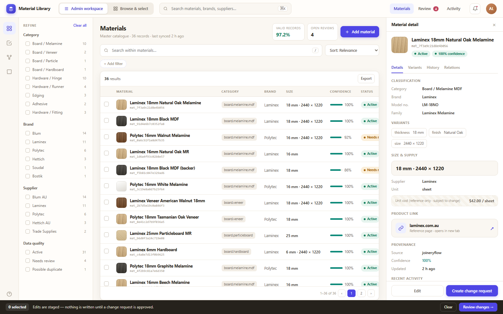
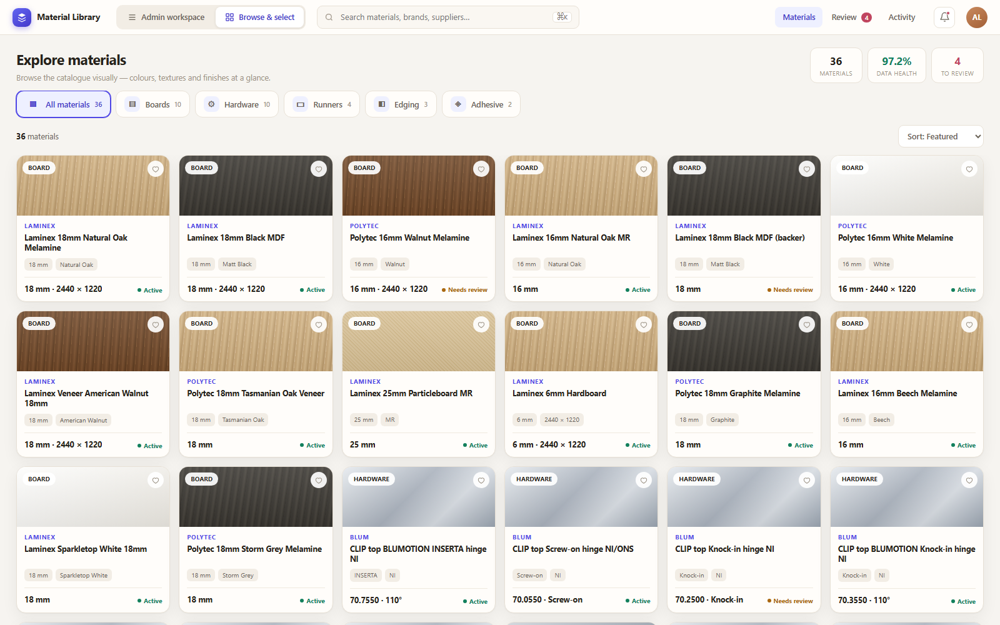
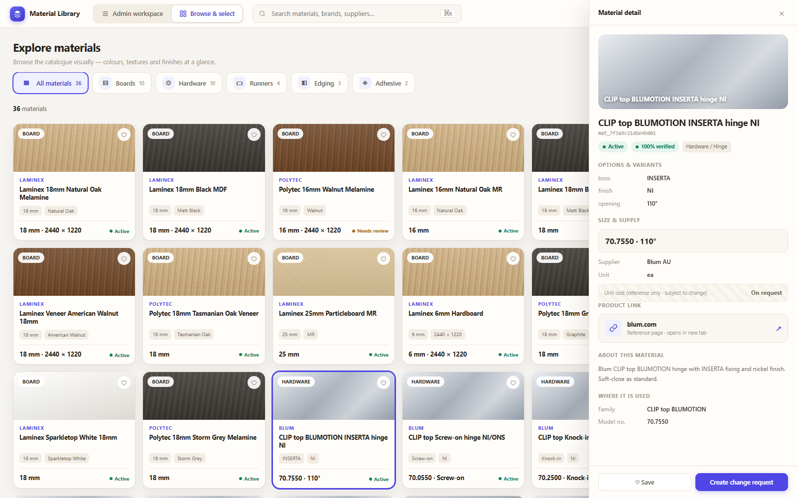
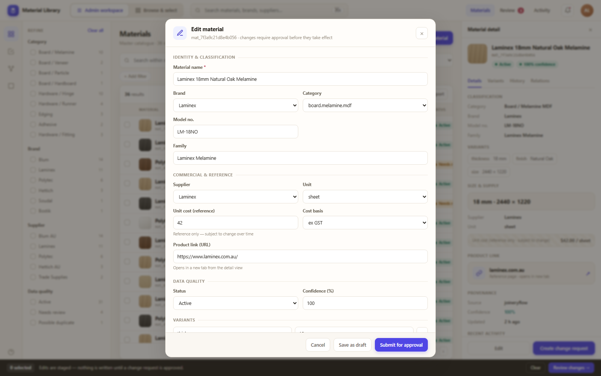
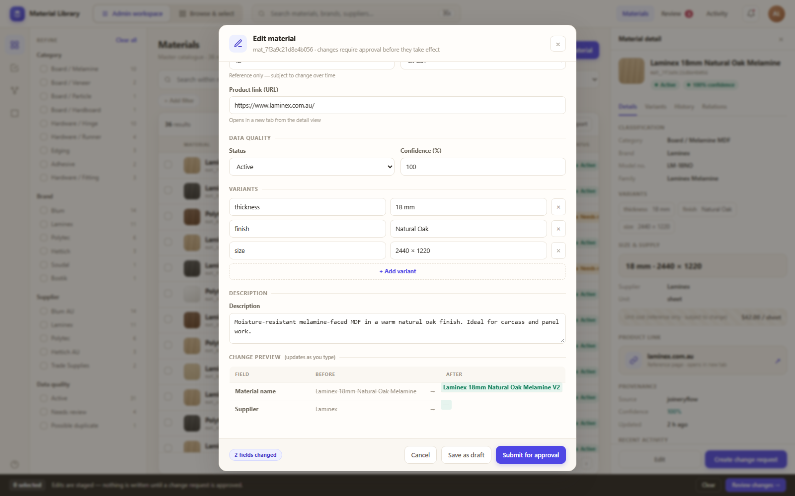
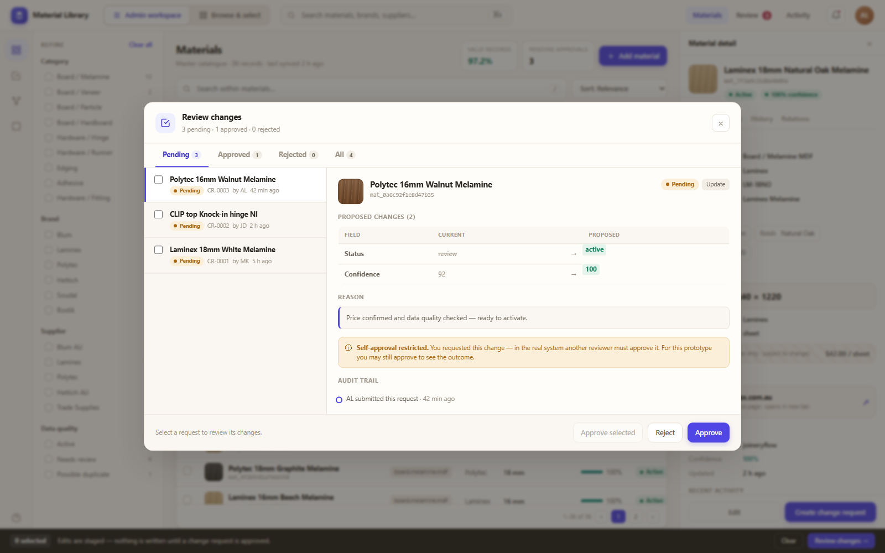
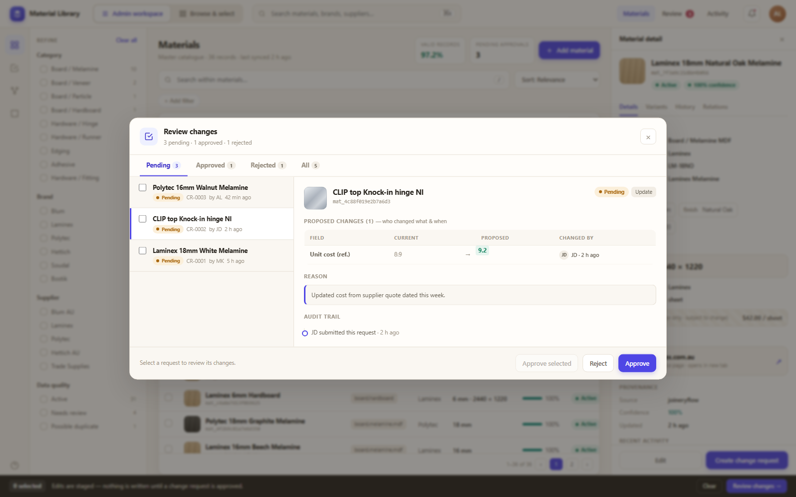
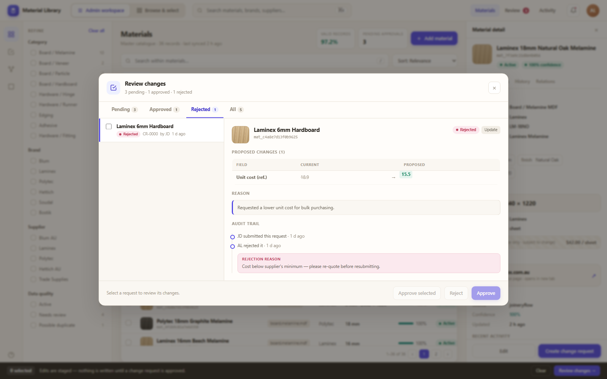
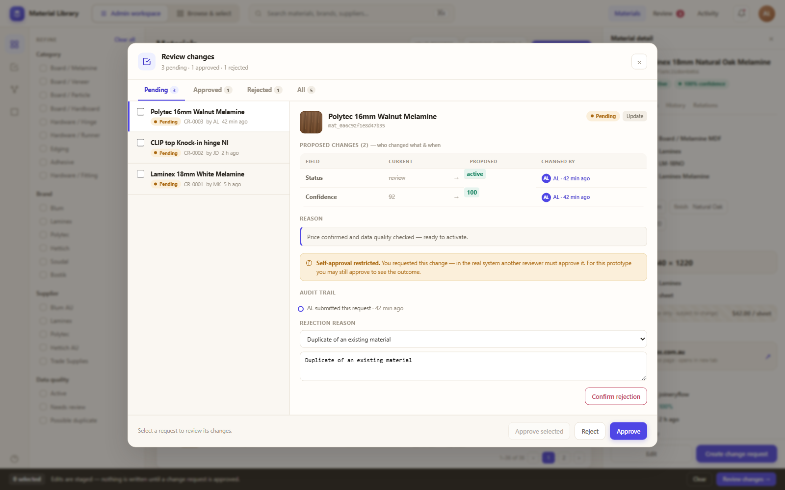
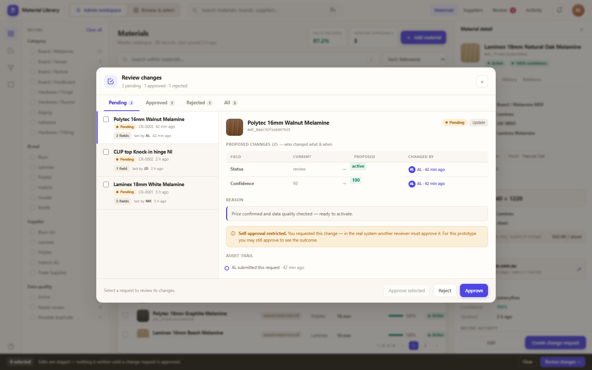
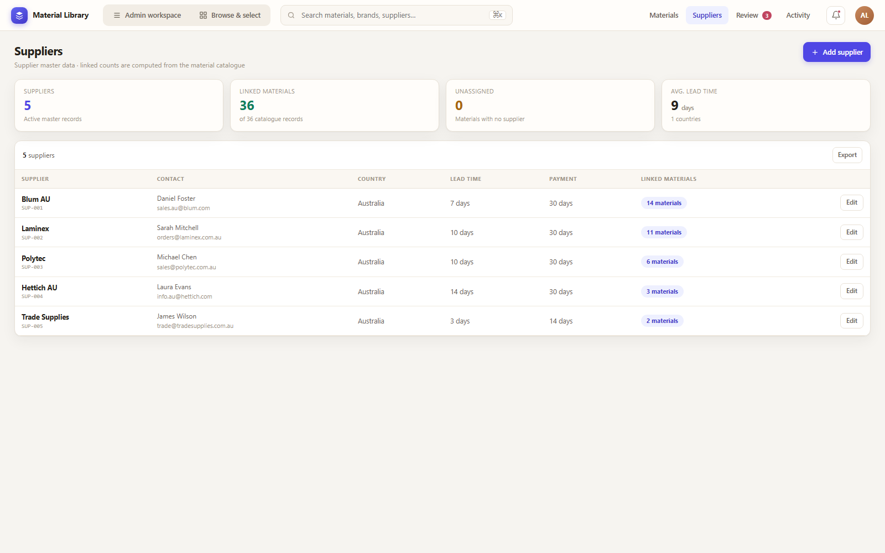
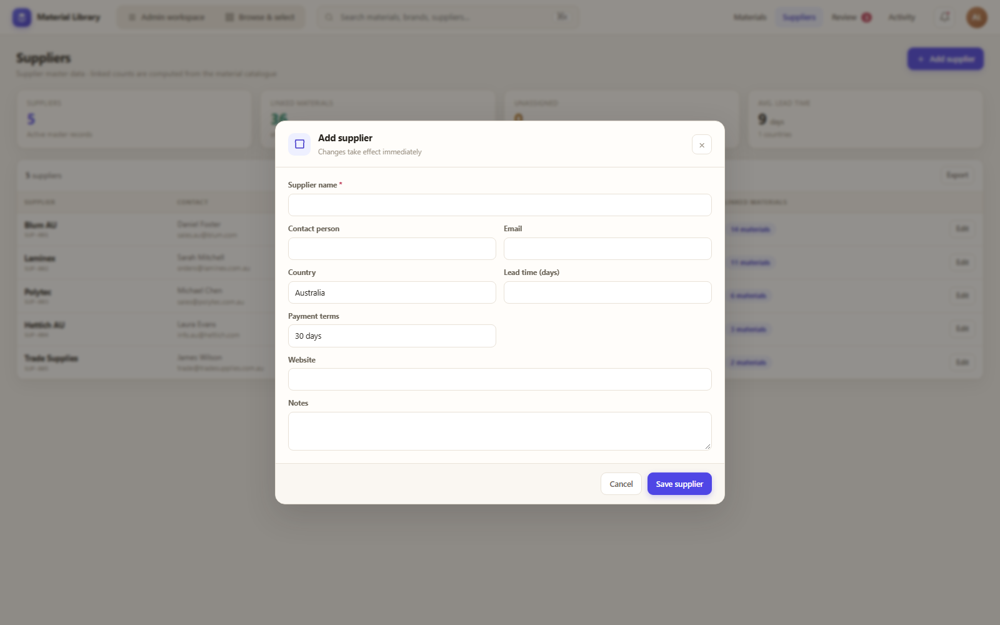
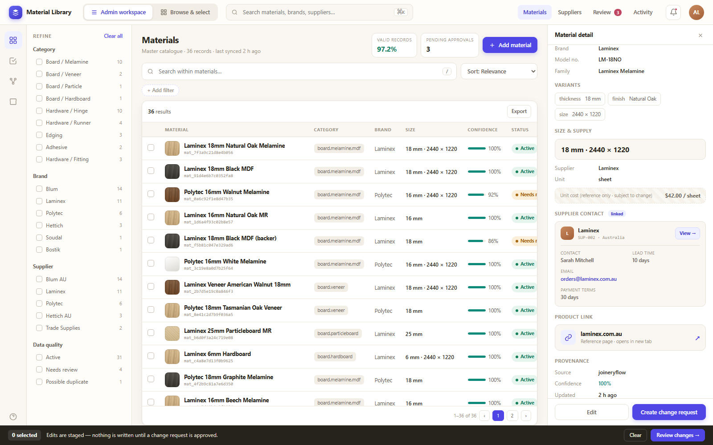
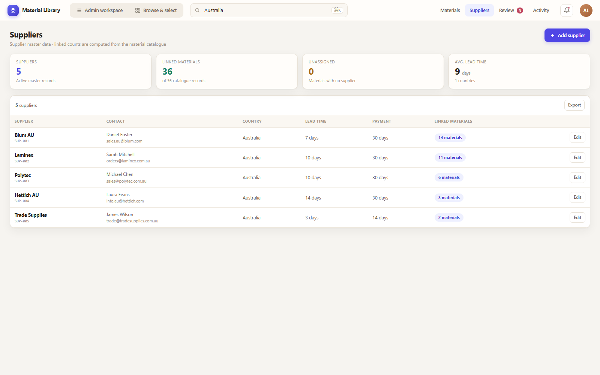
14Handover checklist
Confirm before handing to development
| Item | Notes / current placeholder |
|---|---|
| Real product links | All 36 productUrl values are currently brand homepages as placeholders; replace them with real product pages |
| Price data source | Reference prices are static values; live prices should come from another system — this UI only displays a reference |
| Inventory fields | If on-hand quantities are needed later, add a read-only slot in details/cards without affecting the current structure |
| Approval identity | The current user is fixed to AL; a real system needs SSO/accounts and must enforce self-approval restrictions |
| Supplier approval | Currently direct-write; if approval is required, reuse the workflows request mechanism |
Acceptance self-check
- Open
index.html; both modes switch correctly and state is preserved - Search "Blum AU" returns 14 materials; the Suppliers view search by contact/country works
- Click Edit, change a field → the live diff updates → submit → the request appears in Review
- After Approve the material name changes everywhere; after Reject with a preset reason the audit shows the reason
- Add supplier works, and renaming keeps linked material counts intact
- "View →" in material detail jumps to the supplier and filters the list
.workbuddy-ai/memory/2026-11-20.md; the three-concept comparison is in ui-concepts/COMPARISON.md.